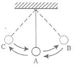

1. Periode suatu getaran adalah 1/2 detik. Tentukan:
a) frekuensi getaran
b) jumlah getaran dalam 5 menit
2. Frekuensi suatu getaran adalah 5 Hz. Tentukan:
a) periode getaran
b) banyak getaran yang terjadi dalam 2 menit
3. Sebuah gelombang merambat dengan kecepatan 340 m/s. Jika frekuensi gelombang adalah 50 Hz, tentukan panjang gelombangnya!
4. Periode suatu gelombang adalah 0,02 s dengan panjang gelombang sebesar 25 meter. Hitunglah cepat rambat gelombangnya!
5. Suatu sumbu getar memancarkan gelombang dengan cepat rambat 340 ms–1, jika frekuensi gelombang tersebut 85 Hz, maka panjang gelombang tersebut adalah ...
A. 1/4 meter
B. 4 meter
C. 255 meter
D. 425 meter (Soal Ebtanas 1998)
6.Perhatikan gambar!
Bandul berayun dengan pola C→A→B→A→C→A→B, jumlah getaran terjadi adalah….
A. 1 getaran
B. 1¼ getaran
C. 1½ getaran
D. 1 ¾ getaran ( Soal UN IPA Fisika SMP/MTs P-ZC-2013/2014 No.9 )
7.Perhatikan gambar!
Bandul berayun dengan pola P→Q→R→S→T, jumlah getaran adalah…
A. ½ getaran
B. ¾ getaran
C. 1 getaran
D. 2 getaran
8.Dua buah ayunan bandul A dan B memilki panjang tali yang sama. Jika ayunan bandul A digetarkan dengan simpangan 4 kali
ayunan bandul B maka:
A. Periode A = 4 kali periode B
B. Periode A = ¼ kali periode B
C. Periode A = Periode B
D. Periode A = 2 kali periode B
9. Sebuah bandul bergetar 50kali dalam waktu 5 sekon. Frekuensi getarannya adalah…
A. 5Hz
B. 10Hz
C. 25Hz
D. 50Hz
10. Sebuah bandul sederhana mempunyai tali 50 cm dan beban bermassa 50 gram. Titik tertinggi beban adalah 10 cm diatas titik terendah. Jika percepatan gravitasinya 10 m/s2 , tentukan:
a. Periode dan frejuensi bandul
b. Kelajuan beban pada titik terendah
11. Sebuah bandul selama 20 detik mengalami 30 getaran, maka frekuensi bandul tersebut adalah…
A. 2,0 hz
B. 1,2 hz
C. 1,5 hz
D. 1,50 hz
E. 1,4 hz
12.Sebuah bandul menempuh setengah ayunan selama 1 detik. Berapakah panjang bandul tersebut di suatu tempat yang memiliki
percepatan gravitasi (g) = 9,7 m/s2 ?
13. Sebuah pendulum melakukan 20 getaran dalam 10 sekon. Berapakah periode dan frekuensinya ?
14. Berapakah periode jam pendulum yang panjangnya 0,2 meter ?
15. Semakin panjang tali, semakin besar frekuensi getaran pendulum. Benarkah pernyataan ini ? jelaskan
16. Sebuah pendulum melakukan 20 getaran dalam 10 sekon. Berapakah periode dan frekuensinya?
17. Apakah massa bola pendulum mempengaruhi periode getarannya ? jelaskan
18. Di suatu tempat tertentu, sebuah bandul sederhana yang panjangnya 1 meter melakukan 50 getaran lengkap dalam 102 sekon.
Berapakah percepatan gravitasi di tempat itu ?
19. Diketahui berat benda di planet mars = 0,4 berat benda di bumi. Jika sebuah bandul yang panjangnya 20 cm dibawa ke mars,
berapakah periode ayunannya ?
20. Berapakah frekuensi getaran pendulum sederhana yang panjangnya 30 cm ketika berada di dalam lift yang jatuh bebas ?
Sumber : [Contoh Soal Bandul Sederhana]